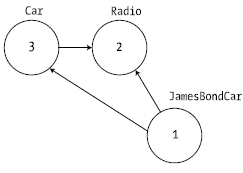

The term serialization describes the process of persisting (and possibly transferring) the state of an object into a stream (e.g., file stream and memory stream). The persisted data sequence contains all the necessary information you need to reconstruct (or deserialize) the state of the object for use later. Using this technology makes it trivial to save vast amounts of data (in various formats). In many cases, saving application data using serialization services results in less code than using the readers/writers you find in the System.IO namespace.
For example, assume you want to create a GUI-based desktop application that provides a way for end users to save their preferences (e.g., window color and font size). To do this, you might define a class named UserPrefs that encapsulates 20 or so pieces of field data. Now, if you were to use a System.IO.BinaryWriter type, you would need to save each field of the UserPrefs object manually. Likewise, if you were to load the data from a file back into memory, you would need to use a System.IO.BinaryReader and (once again) manually read in each value to reconfigure a new UserPrefs object.
This is all doable, but you can save yourself a good amount of time by marking the UserPrefs class with the [Serializable] attribute:
[Serializable] public class UserPrefs { public string WindowColor; public int FontSize; }
Doing this means that you can persist entire state of the object with only a few lines of code. Without getting hung up on the details for the time being, consider the following Main() method:
static void Main(string[] args) { UserPrefs userData= new UserPrefs(); userData.WindowColor = "Yellow"; userData.FontSize = "50"; // The BinaryFormatter persists state data in a binary format. // You would need to import System.Runtime.Serialization.Formatters.Binary // to gain access to BinaryFormatter. BinaryFormatter binFormat = new BinaryFormatter(); // Store object in a local file. using(Stream fStream = new FileStream("user.dat", FileMode.Create, FileAccess.Write, FileShare.None)) { binFormat.Serialize(fStream, userData); } Console.ReadLine(); }
.NET object serialization makes it easy to persist objects; however, the processes used behind the scenes are quite sophisticated. For example, when an object is persisted to a stream, all associated data (e.g., base class data and contained objects) are automatically serialized, as well. Therefore, if you attempt to persist a derived class, all data up the chain of inheritance comes along for the ride. As you will see, you use an object graph to represent a set of interrelated objects.
.NET serialization services also allow you to persist an object graph in a variety of formats. The previous code example uses the BinaryFormatter type; therefore, the state of the UserPrefs object is persisted as a compact binary format. You can also persist an object graph into SOAP or XML format using other types. These formats can be quite helpful when you wish to ensure that your persisted objects travel well across operating systems, languages, and architectures.
Note WCF prefers a slightly different mechanism for serializing objects to/from WCF service operations; it uses the [DataContract] and [DataMember] attributes. You’ll learn more about this in Chapter 25.
Finally, understand that you can persist an object graph into any System.IO.Stream-derived type. In the previous example, you use the FileStream type to persist a UserPrefs object into a local file. However, if you would rather store an object to a specific region of memory, you could use a MemoryStream type instead. All that matters is the fact that the sequence of data correctly represents the state of objects within the graph.
As mentioned previously, the CLR will account for all related objects to ensure that data is persisted correctly when an object is serialized. This set of related objects is referred to as an object graph. Object graphs provide a simple way to document how a set of objects refer to each other, and these relationships do not necessarily map to classic OO relationships (such as the is-a or has-a relationship), although they do model this paradigm quite well.
Each object in an object graph is assigned a unique numerical value. Keep in mind that the numbers assigned to the members in an object graph are arbitrary and have no real meaning to the outside world. Once you assign all objects a numerical value, the object graph can record each object’s set of dependencies.
For example, assume you have created a set of classes that model some automobiles (of course). You have a base class named Car, which has-a Radio. Another class named JamesBondCar extends the Car base type. Figure 20-4 shows a possible object graph that models these relationships.
Figure 20-4 A simple object graph
When reading object graphs, you can use the phrase depends on or refers to when connecting the arrows. Thus, in Figure 20-4, you can see that the Car refers to the Radio class (given the has-a relationship). JamesBondCar refers to Car (given the is-a relationship), as well as to Radio (it inherits this protected member variable).
Of course, the CLR does not paint pictures in memory to represent a graph of related objects. Rather, the relationship documented in the previous diagram is represented by a mathematical formula that looks something like this:
[Car 3, ref 2], [Radio 2], [JamesBondCar 1, ref 3, ref 2]
If you parse this formula, you can see that object 3 (the Car) has a dependency on object 2 (the Radio). Object 2, the Radio, is a lone wolf and requires nobody. Finally, object 1 (the JamesBondCar) has a dependency on object 3, as well as object 2. In any case, when you serialize or deserialize an instance of JamesBondCar, the object graph ensures that the Radio and Car types also participate in the process.
The beautiful thing about the serialization process is that the graph representing the relationships among your objects is established automatically behind the scenes. As you will see later in this chapter, however, you can become more involved in the construction of a given object graph by customizing the serialization process using attributes and interfaces.
Note Strictly speaking, the XmlSerializer type (described later in this chapter) does not persist state using object graphs; however, this type still serializes and deserializes related objects in a predictable manner.